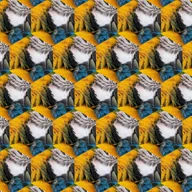

Шестиугольная мозаика

Повторяет середину слоя шестиугольными плитками, заполняя экран.
Настройки
| Настройка | Тип | Диапазон | По умолчанию |
|---|---|---|---|
| Масштаб | Число | от 0.05 до 10 | 1 |
| Угол | Угол | от -3600° до 3600° | 0° |
| Отражение | Вкл. или выкл. | – | Выкл. |

Повторяет середину слоя шестиугольными плитками, заполняя экран.
| Настройка | Тип | Диапазон | По умолчанию |
|---|---|---|---|
| Масштаб | Число | от 0.05 до 10 | 1 |
| Угол | Угол | от -3600° до 3600° | 0° |
| Отражение | Вкл. или выкл. | – | Выкл. |